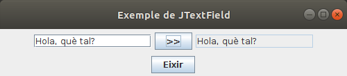

Accés a Dades
4.3.- JTextField
Es el component corresponent a un quadre de text. Les seues propietats i mètodes bàsics són:
- Constructor: en el moment de construir li podem dir opcionalment la grandària (en caràcters)
val c1 = JTextField(25)- getText(): torna el contingut del JTextField
- setText(String): modifica el contingut del JTextField.
- setEditable(Boolean): marcarà si el es pot conviar el seu contingut o no.
El següent exemple trasllada el contingut del primer JTextField al segon quan s'apreta el botó. A més, el segon JTextField no es pot editar, per tant l'única manera de posar-li contingut és a través del primer JTextField apretant el botó :
class Finestra : JFrame() {
val t1 = JTextField(15)
val t2 = JTextField(15)
val boto1 = JButton(">>")
val eixir = JButton("Eixir")
init {
defaultCloseOperation = JFrame.EXIT_ON_CLOSE
setTitle("Exemple de JTextField")
setSize(500, 110)
setLayout(GridLayout(2, 1))
val panell1 = JPanel(FlowLayout())
val panell2 = JPanel(FlowLayout())
add(panell1)
panell1.add(t1)
panell1.add(boto1)
panell1.add(t2)
t2.setEditable(false)
add(panell2)
panell2.add(eixir)
boto1.addActionListener { t2.setText(t1.getText()) }
eixir.addActionListener { System.exit(0) }
}
}
Llicenciat sota la Llicència Creative Commons Reconeixement NoComercial SenseObraDerivada 2.5